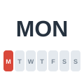
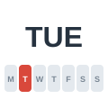
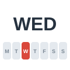
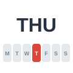
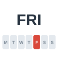
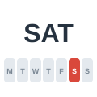
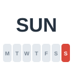
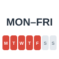
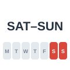

Monday
الاثنين
The office opens again on Monday.
يفتح المكتب مجددًا يوم الاثنين.
Days of the Week
مرّر الماوس على السماعة أو اضغط عليها لتسمع النطق. السماعة الكبيرة نطق أمريكي (وهو المكتوب بالرموز)، وزر UK نطق بريطاني.

الاثنين
The office opens again on Monday.
يفتح المكتب مجددًا يوم الاثنين.

الثلاثاء
I have a dentist appointment on Tuesday.
لدي موعد عند طبيب الأسنان يوم الثلاثاء.

الأربعاء
The report is due on Wednesday.
موعد تسليم التقرير يوم الأربعاء.

الخميس
We're having a meeting next Thursday.
لدينا اجتماع يوم الخميس القادم.

الجمعة
Many people visit their families on Friday.
يزور كثيرون عائلاتهم يوم الجمعة.

السبت
We go shopping every Saturday.
نذهب للتسوق كل سبت.

الأحد
The museum is closed on Sunday.
المتحف مغلق يوم الأحد.

يوم من أيام الأسبوع (العمل)
The trains are crowded on weekdays.
تزدحم القطارات في أيام العمل.

عطلة نهاية الأسبوع
What did you do last weekend?
ماذا فعلت في عطلة نهاية الأسبوع الماضية؟
ستسمع كلمة من كلمات الصفحة، فاضغط على الصورة التي تعبر عنها.
الكلمات المميزة هي كلمات هذه الصفحة. اضغط على أي كلمة ليبدأ الصوت منها ويكمل ما بعدها.
Can we meet this week? I need your help with the new website.
هل يمكننا اللقاء هذا الأسبوع؟ أحتاج إلى مساعدتك في الموقع الجديد.
Of course. Monday is impossible, because I'm in training all day.
بالطبع. الاثنين مستحيل، لأنني في تدريب طوال اليوم.
What about Tuesday morning?
وماذا عن صباح الثلاثاء؟
I'm visiting a client on Tuesday. And on Wednesday I have to finish a report.
سأزور عميلًا يوم الثلاثاء. ويوم الأربعاء عليّ إنهاء تقرير.
You're so busy! Is Thursday any better?
أنت مشغول جدًا! هل الخميس أفضل؟
Thursday is good. Or we can have lunch together on Friday.
الخميس مناسب. أو يمكننا تناول الغداء معًا يوم الجمعة.
Let's choose Thursday. I prefer to meet on a weekday, because the office is open.
لنختر الخميس. أفضّل أن نلتقي في يوم عمل، لأن المكتب مفتوح.
Agreed. Do you have plans for the weekend?
موافق. هل لديك خطط لعطلة نهاية الأسبوع؟
On Saturday I'm taking my kids to the zoo, and on Sunday we're visiting my parents.
يوم السبت سآخذ أطفالي إلى حديقة الحيوان، ويوم الأحد سنزور والديّ.
الكلمات المميزة هي كلمات هذه الصفحة. اضغط على أي كلمة ليبدأ الصوت منها ويكمل ما بعدها.
My week has a clear rhythm. On Monday I return to the office and answer all the emails that arrived while I was away. Tuesday is the day of our long team meeting, so I prepare my notes the night before. On Wednesday I visit my clients, and I usually get home late. Thursday is my favorite weekday, because I work from home and I can focus on my own projects. On Friday we finish early, and many of us go out together for a meal. Then the weekend begins at last! On Saturday I clean the apartment and do the shopping, and in the evening I meet my friends. Sunday is a quiet day for my family, for reading, and for getting ready to start all over again.
لأسبوعي إيقاع واضح. يوم الاثنين أعود إلى المكتب وأرد على كل الرسائل التي وصلت أثناء غيابي. والثلاثاء يوم اجتماع فريقنا الطويل، لذا أعد ملاحظاتي في الليلة السابقة. ويوم الأربعاء أزور عملائي، وعادة ما أعود إلى البيت متأخرًا. والخميس هو يوم العمل المفضل لدي، لأنني أعمل من البيت وأستطيع التركيز على مشاريعي الخاصة. ويوم الجمعة ننتهي مبكرًا، ويخرج كثير منا لتناول وجبة معًا. ثم تبدأ عطلة نهاية الأسبوع أخيرًا! يوم السبت أنظف الشقة وأتسوق، وفي المساء ألتقي بأصدقائي. والأحد يوم هادئ لعائلتي وللقراءة وللاستعداد لبدء كل شيء من جديد.